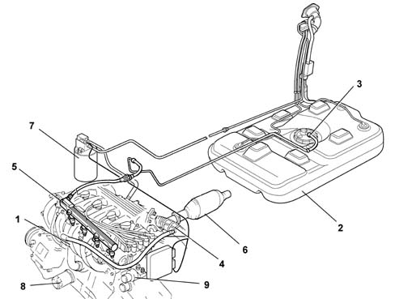
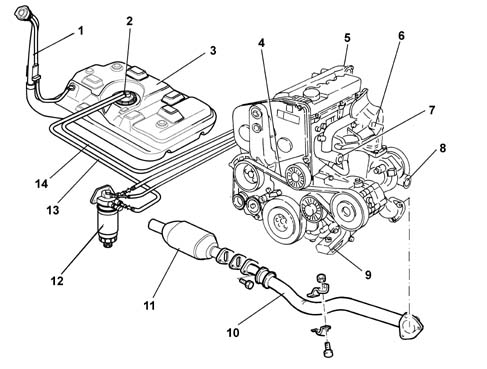
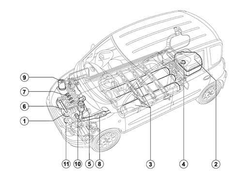
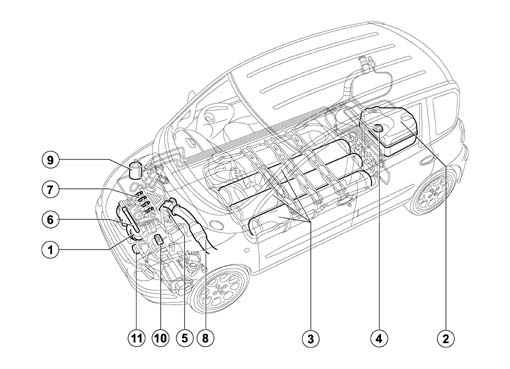
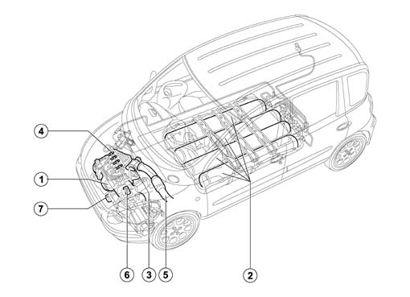
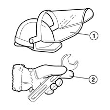
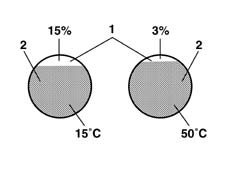
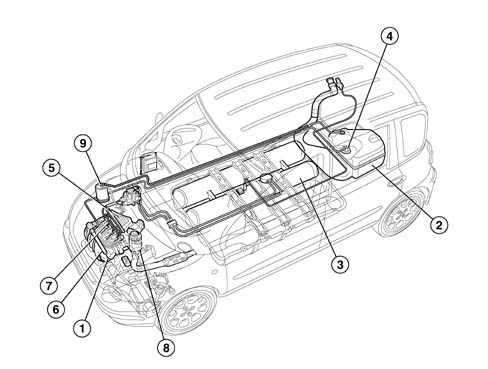

Introduction - ENGINE
- Path
- Descriptions > 10 ENGINE UNIT > Introduction - ENGINE
- Kind
- system description
- Applies to
- all engines; all production periods
- Interactive page
- https://sloeber94.github.io/elrnDB-fMltpl/en/#/2892416
Applies to: all engines; all production periods
Applies to: engines: 1.6 16v; all production periods
HARDENED AND TEMPERED STEEL
Special steel which has undergone a hardening and tempering treatment.
Heat treatment applied to special steels to improve their mechanical characteristics: it consists of hardening, followed by tempering to induce a significant increase in toughness of the material.
Tempering: consists of heating to a temperature of < 720°C followed by slow cooling, in order to attenuate the effects of the hardening without eliminating its effects. The material thus returns to a condition as close as possible to a stable chemical-physical balance.
Hardening: this is obtained when the structure of the metal at high temperature is harder and stronger than when cold.
CONDENSATION
This the reverse of evaporation, i.e. when a substance passes from the vapour state to the liquid state; it is obtained by compression or cooling.
DETONATION
Phenomenon involving abnormal combustion, extremely rapid, of the part of the mixture which burns last.
It is perceptible by the metallic noises in the cylinder head and a gradual reduction in power.
The phenomenon is mainly associated with the engine's compression ratio and the characteristics of the fuel forming the mixture.
EVAPORATION
Also called vaporization, this is the passage of a body from the liquid state to the gaseous state.
It occurs at any temperature, but, when all other conditions are the same, all the more slowly the lower the temperature.
RESONANCE
Phenomenon in which the amplitude of oscillations induced in a vibrating system tends, under particular conditions, to become intensified (amplified) beyond all limits.
SENSOR
This is a system which, stimulated by any form of energy, reacts by changing its state, hence one or more of its characteristics (resistivity, volume, temperature, etc.).
For example, a material which, immersed in a magnetic field, undergoes a change in its conductivity, is a sensor.
New-generation sensors are solid-state devices of microelectronic technology, which can read the environment and provide responses in the form of electrical signals for subsequent processing for final control actions.
They can measure forces, acceleration, pressures and temperatures of gases, liquids and solids, concentrations of gases such as nitric oxides, oxygen, etc.
VISCOSITY
Property of matter whereby the particles of a body meet "resistance" in sliding in relation to each other. The value of the resistance or internal friction depends on the nature of the body, large in solids, very small in viscous liquids and non-existent in gases. In liquids, viscosity decreases rapidly as temperature increases.
Engine with 4 cylinders in line, 16 valves, 1580 cc, twin overhead camshaft, with Marelli IAW 49F.B2 integrated electronic injection/ignition system.
VIEW OF ASSEMBLY
-

1, Engine and power unit 2, Fuel tank and pipes 3, Pump(s) and fuel circuit devices 4, Engine air supply circuit 5, Petrol injection system 6, Exhaust pipes and silencers 7, Emission control system 8, Engine lubrication system 9, Engine cooling system
The unit comprises the engine and all the systems required for its operation:
- fuel supply system
- air supply system
- engine cooling system
- exhaust system with catalytic converter
- fuel vapour recirculation system.
The operation of these systems is optimized by an electronic control system governed by a control unit.
An understanding of the operating logic of the control unit gives an overall picture of the entire GROUP 10 system 10 ENGINE UNIT( 1056 PETROL INJECTION SYSTEM).
Fuel supply system
It is the returnless type with an electric fuel pump immersed in the tank and a casing which incorporates the voltage regulator, the fuel gauge and the filter (for further details 1040 FUEL TANK AND PIPES).
Air supply system
Air supply system with plastic inlet manifold and large air filter casing to limit inlet noise (for further details 1048 ENGINE AIR SUPPLY CIRCUITand 1072).
Exhaust system
The exhaust system is equipped with a three-way catalytic converter and a Lambda sensor (for further details 1076 EXHAUST PIPES AND SILENCERS).
Emission control system
The following emission control systems are fitted on this model:
- Exhaust emission control system with a three-way catalytic converter and Lambda sensor;
- crankcase vapour/gas recirculation system;
- fuel anti-evaporation system;
(for further details 1080 EXHAUST EMISSION CONTROL SYSTEM).
Cooling system
Forced circulation with a centrifugal vane pump (for further details 1088 ENGINE COOLING).
Applies to: all engines; all production periods
Applies to: engines: 1.9 JTD 8V; all production periods
HARDENED AND TEMPERED STEEL
Heat treatment applied to special steels to improve their mechanical characteristics: it consists of hardening, followed by tempering to induce a significant increase in toughness of the material.
Tempering: consists of heating to a temperature of < 720°C followed by slow cooling, in order to attenuate the effects of the hardening without eliminating its effects.
The material thus returns to a condition as close as possible to a stable chemical-physical balance.
Hardening: this is obtained when the structure of the metal at high temperature is harder and stronger than when cold.
CLOSED-DECK
This indicates the type of assembly of the cylinder liners in the cylinder block; in this case the two components are integral in the top.
CONDENSATION
This the reverse of evaporation, i.e. when a substance passes from the vapour state to the liquid state; it is obtained by compression or cooling.
EVAPORATION
Also called vaporization, this is the passage of a body from the liquid state to the gaseous state.
It occurs at any temperature, but, when all other conditions are the same, all the more slowly the lower the temperature.
RESONANCE
Phenomenon in which the amplitude of oscillations induced in a vibrating system tends, under particular conditions, to become intensified (amplified) beyond all limits.
SENSOR
This is a system which, stimulated by any form of energy, reacts by changing its state, hence one or more of its characteristics (resistivity, volume, temperature, etc.).
For example, a material which, immersed in a magnetic field, undergoes a change in its conductivity, is a sensor.
New-generation sensors are solid-state devices of microelectronic technology, which can read the environment and provide responses in the form of electrical signals for subsequent processing for final control actions.
They can measure forces, acceleration, pressures and temperatures of gases, liquids and solids, concentrations of gases such as nitric oxides, oxygen, etc.
VISCOSITY
Property of matter whereby the particles of a body meet "resistance" in sliding in relation to each other.
The value of the resistance or internal friction depends on the nature of the body, large in solids, very small in viscous liquids and non-existent in gases.
In liquids, viscosity decreases rapidly as temperature increases.

1, Fuel filler 2, Electric fuel pump 3, Fuel tank 4, Auxiliary drive belt 5, Inlet manifold 6, Exhaust manifold 7, Cooling system pipes 8, Turbocharger 9, Power unit mounting 10, Exhaust pipe 11, Oxidizing catalyzer 12, Fuel filter 13, Fuel supply pipe 14, Fuel return pipe
Direct injection turbodiesel engine without precombustion chamber, 4 cylinders in line, 1910 c.c., two valves per cylinder, overhead camshaft, supercharged with turbocharger and intercooler, Bosch Common Rail EDC-15C electronic fuel injection system.
Engine 4 cylinders in line
Bore 82 mm
Stroke 90.4 mm
Cylinder capacity1910 cm3
Cylinder headaluminium alloy, two valves per cylinder, cross-flow type
Engine block cast iron closed-deck type
Crankshaft cast iron, 5 main bearings, 4 counterweights
Timing gearsingle overhead camshaft driven by toothed belt
Fuel systemdirect injection with turbocharger and intercooler Common Rail type electronic engine control system
Emission E.G.R. with closed-loop control control and catalytic converter
Lubrication artificial circulation with gear-type pump and water-oil heat exchanger (steel modine)
Cooling artificial circulation with centrifugal pump; thermostatted electric fan
The unit comprises the engine and all the systems required for its operation:
- fuel supply system;
- air supply system;
- engine cooling system
- exhaust system with catalytic converter
- oil vapour recirculation system
- E.G.R. exhaust gas recirculation system
TECHNICAL ADVANTAGES
Performance;
high efficiency;
reduced consumption, about 15% less compared with precombustion chamber;
high reliability thanks to the adoption of a "multilayer" metal cylinder head gasket;
reduction of dispersed heat, so engine is technically less stressed;
significant reduction of noise level;
wide choice of injection pressures;
simplification of he pump operating mechanisms;
improvements in air-fuel mixing with advantages in terms of emissions and consumption.
Applies to: engines: 1.6 16v; all production periods; only with equipment: BIPOWER and BLUPOWER
GLOSSARY
Hardened and tempered steel
Special steel which has undergone a hardening and tempering treatment.
Heat treatment applied to special steels to improve their mechanical characteristics: it consists of hardening, followed by tempering to induce a significant increase in toughness of the material.
Tempering: consists of heating to a temperature of < 720°Χ φολλοωεδ βψ σλοω χοολινγ, ιν ορδερ το αττενυατε τηε εφφεχτσ οφ τηε ηαρδενινγ ωιτηουτ ελιμινατινγ ιτσ εφφεχτσ. Τηε ματεριαλ τηυσ ρετυρνσ το α χονδιτιον ασ χλοσε ασ ποσσιβλε το α σταβλε χηεμιχαλ-physical balance.
Hardening: this is obtained when the structure of the metal at high temperature is harder and stronger than when cold.
Condensation
This the reverse of evaporation, i.e. when a substance passes from the vapour state to the liquid state; it is obtained by compression or cooling.
Detonation
Phenomenon involving abnormal combustion, extremely rapid, of the part of the mixture which burns last.
It is perceptible by the metallic noises in the cylinder head and a gradual reduction in power.
The phenomenon is mainly associated with the engine's compression ratio and the characteristics of the fuel forming the mixture.
Applies to: engines: 1.6 16v; all production periods; only with equipment: Euro 3 and BIPOWER
GLOSSARY
Hardened and tempered steel
Special steel which has undergone a hardening and tempering treatment.
Heat treatment applied to special steels to improve their mechanical characteristics: it consists of hardening, followed by tempering to induce a significant increase in toughness of the material.
Tempering: consists of heating to a temperature of < 720°Χ φολλοωεδ βψ σλοω χοολινγ, in order to attenuate the effects of the hardening without eliminating its effects. The material thus returns to a condition as close as possible to a stable chemical-physical balance.
Hardening: this is obtained when the structure of the metal at high temperature is harder and stronger than when cold.
Condensation
This the reverse of evaporation, i.e. when a substance passes from the vapour state to the liquid state; it takes place by compression or cooling.
Detonation
Phenomenon involving abnormal combustion, extremely rapid, of the part of the mixture which burns last.
It is perceptible by the metallic noises in the cylinder head and a gradual reduction in power.
The phenomenon is mainly associated with the engine's compression ratio and the characteristics of the fuel forming the mixture.
View of assembly

1, Engine and power unit 2, Fuel tank and pipes 3, Methane canisters and pipes 4, Supply circuit pump and devices 5, Engine air supply circuit 6, Petrol injection system 7, Methane injection system 8, exhaust emission control system 9, Fuel anti-evaporation circuit 10, Engine cooling 11, Engine lubrication
Applies to: engines: 1.6 16v; all production periods; only with equipment: BIPOWER
CONSTRUCTION FEATURES
VIEW OF ASSEMBLY

1, Engine and power unit 2, Fuel tank and pipes 3, Methane canisters and pipes 4, Supply circuit pump and devices 5, Engine air supply circuit 6, Petrol injection system 7, Methane injection system 8, exhaust emission control system 9, Fuel anti-evaporation circuit 10, Engine cooling 11, Engine lubrication
Engine with 4 cylinders in line, 16 valves, 1580 cc, twin overhead camshaft, with Marelli IAW 4GF.2M integrated electronic injection/ignition system.
The unit comprises the engine and all the systems required for its operation:
- fuel supply system
- methane supply system
- air supply system
- exhaust system with catalytic converter
- fuel vapour recirculation system.
- engine cooling system
- engine lubrication system
The operation of these systems is optimized by an electronic control system governed by a control unit.
An understanding of the operating logic of the control unit gives an overall picture of the entire GROUP 10 system (see 1056 PETROL INJECTION SYSTEM).
The Multipla bipower features two fuel systems in order to be able to run on either traditional "petrol" fuel or "Compressed Natural Gas" (CNG).
The natural gas mainly consists of "methane" but contains small quantities of other hydrocarbons and inert gases in percentages which vary according to the origin of the CNG. For this reason natural gas is commonly called "methane" and will known as such hereafter.
The conversion of the engine consists exclusively in the addition of the components which makes up the methane supply system, in other words the canisters, a feed manifold, specific injectors, the methane system electrical management system and the valve seats made from material with low wear properties.
The system features the injection of the methane fuel into the individual intake manifolds, resulting in a "Multipoint Phased Sequential" injection system similar to that for traditional petrol systems (remaining unchanged).
The advantage of this solution is that it does not alter the driveability or the performance of the vehicle in any way compared with when it is running on petrol (conversion kits available involve an alteration as a result of the introduction of a choke pipe in the engine intake manifold). When running on methane the driveability is the same as that when running on petrol, something which was not the case with vehicles converted previously, whilst the performance is slightly inferior as a result of the decreased maximum power and torque, compared with petrol operation, due to the reduced refilling of the cylinders.
When the engine runs on methane there is also an improvement in terms of pollutant exhaust emissions.
This improvement particularly involves the emission of unburnt hydrocarbons. They basically consist of methane, whilst the quantities of hydrocarbons with more complex molecules is negligible. The difference is very important: the methane is not harmful because as its molecules are stable it is not very reactive. It does not therefore give rise to damaging and inconvenient photochemical smog and does not contribute to the formation of ozone which, being an oxidizing energy, damages organic substances.
Fuel supply system
There are two distinct fuel systems present.
The petrol system is the returnless type with an electric fuel pump immersed in the tank and a casing which incorporates the voltage regulator, the fuel gauge and the filter.
The methane system has a series of canisters, connected in paralle, a pressure reduction unit and specific injectors located on the intake manifold (for further details see 1040 FUEL TANK AND PIPES, 1042 METHANE GAS CANNISTER AND TUBES, 1044 FUEL CIRCUIT PUMP/S AND DEVICES).
Air supply system
Air supply system with plastic inlet manifold and large air filter casing to limit inlet noise (for further details 1048 ENGINE AIR SUPPLY CIRCUITand 1072).
Exhaust system
The exhaust system is equipped with a three-way catalytic converter and a Lambda sensor (for further details see 1076 EXHAUST PIPES AND SILENCERS).
Emission control system
The following emission control systems are fitted on this model:
- Exhaust emission control system with a three-way catalytic converter and Lambda sensor;
- crankcase vapour/gas recirculation system;
- fuel anti-evaporation system;
(for further details see 1080 EXHAUST EMISSION CONTROL SYSTEM).
COOLING SYSTEM
Forced circulation with a centrifugal vane pump (for further details see 1088 ENGINE COOLING).
Applies to: engines: 1.6 16v; all production periods; only with equipment: Euro 3 and BIPOWER
CONSTRUCTION FEATURES
Engine with 4 cylinders in line, 16 valves, 1596 cc, twin overhead camshaft, with Marelli IAW 4EF.G1 integrated electronic injection/ignition system.
The unit comprises the engine and all the systems required for its operation:
- fuel supply system
- methane supply system
- air supply system;
- exhaust system with catalytic converter
- fuel vapour recirculation system.
- engine cooling system
- engine lubrication system
The Multipla bipower features two fuel systems in order to be able to run on either traditional 'petrol' fuel or 'Compressed Natural Gas' (CNG).
The dual fuel system consists of the basic system (Magneti Marelli IAW 4EF.G1) for petrol operation and an integral methane system(Metatron METAFUEL5D0).
The two control systems are connected via a high-speed CAN line.
The METAFUEL system is transparent to the basic system in all components and does not alter the functions of the basic system under any service conditions.
The two control units share certain system elements. The sharing is transparent to the basic system (for more details see 1056 PETROL INJECTION SYSTEM- 1058 GAS CIRCUIT).
The Natural Gas consists mainly of 'methane' but contains small quantities of other hydrocarbons and inert gases in percentages which vary according to where the CNG comes from. For this reason natural gas is commonly known as 'methane' and will be known as such hereafter.
The conversion of the engine consists exclusively in the addition of the components which makes up the methane supply system, in other words the canisters, a feed manifold, specific injectors, the methane system electrical management system and the valve seats made from material with low wear properties.
The system features the injection of the methane fuel into the individual intake manifolds, resulting in a 'Multipoint Phased Sequential' injection system similar to that for traditional petrol systems (remaining unchanged).
The advantage of this solution is that it does not alter the driveability or the performance of the vehicle in any way compared with when it is running on petrol (conversion kits available involve an alteration as a result of the introduction of a choke pipe in the engine intake manifold). When running on methane the driveability is the same as that when running on petrol, something which was not the case with vehicles converted previously, whilst the performance is slightly inferior as a result of the decreased maximum power and torque, compared with petrol operation, due to the reduced refilling of the cylinders.
When the engine runs on methane there is also an improvement in terms of pollutant exhaust emissions.
The improvement particularly involves the emission of unburnt hydrocarbons. These basically consist of methane, whilst the quantities of more complex molecular hydrocarbons are negligible. The difference is very important: the methane is not harmful because as its molecules are stable it is not very reactive. It does not therefore give rise to the damaging and inconvenient photochemical smog and does not contribute to the formation of ozone which, being an oxidizing energy, damages organic substances.
Fuel supply system
There are two distinct fuel systems present.
The petrol system is the returnless type with an electric fuel pump immersed in the tank and a casing which incorporates the voltage regulator, the fuel gauge and the filter.
The methane system has a series of canisters, connected in parallel, a pressure reduction unit and specific injectors located on the intake manifold (for further details see 1040 FUEL TANK AND PIPES- 1042 METHANE GAS CANNISTER AND TUBES- 1044 FUEL CIRCUIT PUMP/S AND DEVICES).
Air supply system
Air supply system with plastic inlet manifold and large air filter casing to limit inlet noise (for further details see 1048 ENGINE AIR SUPPLY CIRCUITand 1072).
Exhaust system
The exhaust system is equipped with a three-way catalytic converter and two Lambda sensors, one downstream and one upstream of the catalytic converter (for further details see 1076 EXHAUST PIPES AND SILENCERS).
Emission control system
The following emission control systems are fitted on this model:
- Exhaust emission control system with a three-way catalytic converter and 2 Lambda sensors, one downstream and one upstream of the catalytic converter;
- crankcase vapour/gas recirculation system;
- fuel evaporation control system; (for further details see).
COOLING SYSTEM
Forced circulation with a centrifugal vane pump (for further details see 1080 EXHAUST EMISSION CONTROL SYSTEM).
Applies to: engines: 1.6 16v; all production periods; only with equipment: BLUPOWER
CONSTRUCTION FEATURES
VIEW OF ASSEMBLY

1, Engine and power unit 2, Methane canisters and pipes 3, Engine air supply circuit 4, Methane injection 5, Exhaust emission control system 6, Engine cooling 7, Engine lubrication
Engine with 4 cylinders in line, 16 valves, 1580 cc, twin overhead camshaft, with Marelli IAW 4GF.2M integrated electronic injection/ignition system.
The unit comprises the engine and all the systems required for its operation:
- methane supply system
- air supply system
- exhaust system with catalytic converter
- engine cooling system
- engine lubrication system
The operation of these systems is optimized by an electronic control system governed by a control unit.
An understanding of the operating logic of the control unit gives an overall picture of the entire GROUP 10 system (see 1056 PETROL INJECTION SYSTEM).
The Multipla blupower features a "Compressed Natural Gas" system (CNG).
The Natural Gas consists mainly of "methane" but contains small quantities of other hydrocarbons and inert gases in percentages which vary according to where the CNG comes from. For this reason natural gas is commonly known as "methane" and will be known as such hereafter.
The transformation of the engine involves the elimination of specific components for running on petrol and the addition of components which make up the methane supply system, namely the canisters, a feed manifold, specific injectors, the methane system electrical management system and valve seats made from material with low wear properties.
The system features the injection of the methane fuel into the individual intake manifolds, through a "Multipoint, Phased Sequential" system similar n design to that of conventional petrol systems.
This solutions produces perfect driveability on a par with petrol systems, whilst the performance is slightly inferior as a result of the decrease in maximum power and torque compared with running on petrol due to the decreased refilling of the cylinders.
There is also an improvement in terms of pollutant exhaust emissions.
The improvement particularly involves the emission of unburnt hydrocarbons. These basically consist of methane, whilst the quantities of more complex molecular hydrocarbons are negligible. The difference is very important: the methane is not harmful because as its molecules are stable it is not very reactive. It does not therefore give rise to the damaging and inconvenient photochemical smog and does not contribute to the formation of ozone which, being an oxidizing energy, damages organic substances.
Fuel supply system
The methane system has a series of canisters, connected in parallel, a pressure reduction unit and specific injectors located on the intake manifold (for further details see 1040 FUEL TANK AND PIPES- 1042 METHANE GAS CANNISTER AND TUBES- 1044 FUEL CIRCUIT PUMP/S AND DEVICES).
Air supply system
Air supply system with plastic inlet manifold and large air filter casing to limit inlet noise (for further details 1048 ENGINE AIR SUPPLY CIRCUITand 1072).
Exhaust system
The exhaust system is equipped with a three-way catalytic converter and a Lambda sensor (for further details see 1076 EXHAUST PIPES AND SILENCERS).
Emission control system
The following emission control systems are fitted on this model:
- Exhaust emission control system with a three-way catalytic converter and Lambda sensor;
Cooling system
Forced circulation with a centrifugal vane pump (for further details see 1088 ENGINE COOLING).
Applies to: engines: 1.6 16v; all production periods; only with equipment: GPOWER and Euro 3
GLOSSARY
GLOSSARY
Aramidico
Special asbestos-free fibre used to make cylinder head gaskets
Lpg
LPG (Liquid Petroleum Gas) is a hydrocarbon mixture (propane,butane, isobutane, propylene etc.) that is in a gaseous state at atmospheric pressure.
At normal environmental temperature, this mixture may be liquified at a relatively low pressure (about 8 bars).
Calorific power
Represents the energy content of a fuel
It varies according to the amount of carbon and hydrogen in the fuel. the higher the hydrogen/carbon ratio, the higher tha calorific power.
All else being equal, higher caloriifc power means lower fuel consumption.
Evaporation
Passage of a substance from a liquid state to a gaseous state. achieved by expanding or heating the substance.
Endothermic
Particular type of chemical reaction whereby heat is absorbed from the surrounding environment with a consequent reduction in temperature.
Liquid gas expansion is an endothermic reaction. The temperature of items in contact with the expansion may drop as low as -40 °Χ ιν τηε χασε οφ ΛΠΓ.
GLOSSARY
VIEW OF ASSEMBLY
WARNINGS AND PRECAUTIONS
Liquid Petroleum Gas (LPG) systems, although no more dangerous in practical situations than regular petrol systems, require special attention as far as maintenance operations are concerned.
In particular, when opening the connectors or moving pressurized components, operators should wear a helmet with a visor (1) which conforms to regulation UNI-EN 166 for protecting their face from any jets. They must also wear winter gloves (2) in line with UNI-EN 388 and UNI-EN 511 standards to protect their hands from burns from the cold generated due to expansion and consequent heat absorption by the LPG.

The system adopted on the Fiat Multipla conforms to the regulations in the individual countries where it is marketed.
The presence of one-way valves on the LPG tank inlet pipes from the filler fitting and injector return pipe prevents gas accidentally emerging from the tank.
Solenoids located: one on the tank by the supply pipe and the other on the pressure regulator, isolate the two sections of the supply pipe when the supply is set to petrol mode or when the engine is switched off.
The one-way valve on the filler fitting prevents LPG in the supply pipe returning outside.
In spite of the presence of these devices it is necessary to remember that, in ambient conditions, LPG is a gas and thus highly explosive; in the presence of potential leaks during maintenance operations to the system, always follow these precautions:
- do not smoke.
- no naked flames .
- do not use electric tools and driers.
- do not use incandescent lamps.
- do not wear acryclic clothes which produce static electricity .
- always disconnect battery terminals.
- when the vehicle is in the workshop, do not park near pits, intake duct drains or closed places without adequate ventilation. Danger of explosion: LPG is heavier than air and tends to take up the lowest possible position to fill any vehicle openings and thus create dangerous, potentially explosive pockets.
- do not use workshop equipment such as: air compressors, current generators, exhaust fans, electric tools, etc. which could produce sparks and, if there were leaks, cause an explosion.
- do not use any type of exhaust fan; - always work in well ventilated areas.
- do not take cars with LPG systems into closed places if they have undergone accidents or if you are unsure whether the system seals are intact.
If the vehicle has to go in a drying oven after painting, at temperatures above 80°C, then the injection control unit and the methane canisters must be removed from the vehicle (remove both tanks if the optional double tank is fitted).
CONSTRUCTION FEATURES
Engine with 4 cylinders in line, 16 valves, 1596 cc, twin overhead camshaft, with Marelli IAW 4EF.G1 integrated electronic injection/ignition system.
The unit comprises the engine and all the systems required for its operation:
- fuel supply system
- LPG fuel system
- air supply system;
- exhaust system with catalytic converter
- fuel vapour recirculation system.
- engine cooling system
- engine lubrication system
The Fiat Multipla bipower features two fuel systems and can run on either conventional petrol or Liquid Petroleum Gas (LPG).
The dual fuel system consists of a basic system (Magneti Marelli IAW 4EF.G1) for petrol operation and an integral LPG system.
Both systems are connected via a high-speed CAN line.
All parts of the LPG system are transparent to the basic system and it does not alter the operation of the basic system in any service conditions.
Both control units share certain system elements. The sharing is transparent to the base system (for more details 1056 PETROL INJECTION SYSTEM- 1057 LPG FUEL SYSTEM.).
Liquid Petroleum Gas essentially consists of two hydrocarbons, propane and butane.
LPG is obtained mainly from:
- oil refinery processes
- degasolining of natural gas (removal of liquid hydrocarbons contained in the natural gas)
Like all petroleum gases, LPG is heavier than air, colourless and odourless. An odour (Mercaptane) is added so that its presence can easily be detected.
The composition of the LPG easily allows it to be converted from a natural state (15°C) to a liquid state by means of a slight pressure increase (7.5 bars).
Due to these properties, the gaseous part (1) and the liquid part (2) are balanced in the tank.
Whenever LPG is drawn off, part of the liquid evaporates to re-establish the balance between liquid and gas.
Because the volume of liquid LPG increases by 0.25% for every 1 degree C temperature increase, it is essential to ensure that the tank is filled to 8% of its capacity to allow the liquid to expand when the temperature increases (environment, car operation).

Properties that make it useful as a fuel for self-propelled engines, an application that dates back to the Fifties, include its excellent antiknock qualities and the fact that combustion takes place without the formation of deposits in the combustion chamber.
Due to the absence of aromatic components and additives such as sulphur and lead, exhaust emissions are significantly less polluting than those generated by petrol.
Apart from the material used for the valve seats, the only change required to convert the engine to run on LPG is the addition of LPG fuel system parts, i.e. cylinders, output and recirculation pipes, a pressure regulator, special injectors and an electronic control unit to manage the LPG supply.
Valve seats must be made of material that is particularly resistant to wear and heat because, unlike petrol, LPG has very low properties of lubrication.
The system injects liquid LPG into the individual intake ports, resulting in a Multipoint Phased Sequential injection system similar to that used for conventional petrol systems (remaining unchanged).
The adoption of this new LPG injection system is justiifed by the need to make the use of LPG more economical in terms of fuel consumption and also from the viewpoint of performance and environmental impact.
The best conventional LPG sytems of the past (with evaporator and mixer) could easily compete with petrol systems from an economic viewpoint and also from the viewpoint of emissions - although limits were imposed by problems of flashback and response lag.
Technological development has led to the creation of new injection systems that firstly used the fuel as a gas and now use it as a fluid in the same way as petrol.
The gaseous phase injection system was the first development of conventional systems with evaporator and mixer, but the designers encountered difficulties when trying to make gaseous fluid injectors with an injection precision comparable to those used for liquid injection.
In this type of system, fuel is metered by a step motor that modulates LPG flow according to supply requirements while gas is introduced downstream of the valve body by means of mechanical membrane injectors operated by the vacuum in the intake manifold.
These problems were overcome with the adoption of a liquid phase injection system. The system is simpler because it does not need a mixer and evaporator. Because injection is managed in line with fuel injection, moreover, the original engine strategy can be used (idle speed management, cut-off during over-run and enrichment during acceleration and full load) although a special control unit must be added.
Fuel supply system
There are two distinct fuel systems present.
The petrol system is the returnless type with an electric fuel pump immersed in the tank and a casing which incorporates the voltage regulator, the fuel gauge and the filter.
The LPG system comes with a cylindrical tank (a second tank is supplied as an option), a pressure regulator and specific injectors located on the intake manifold (for further details see 1040 FUEL TANK AND PIPES- 1043 LGP TANK AND PIPES).
Air supply system
Air supply system with light alloy inlet manifold and large air filter casing to limit inlet noise.
Exhaust system
The exhaust system is equipped with a three-way catalytic converter and two Lambda sensors (for further details 1076 EXHAUST PIPES AND SILENCERS- 1080 EXHAUST EMISSION CONTROL SYSTEM).
Emission control system
The following emission control systems are fitted on this model:
- Exhaust emission control system with a three-way catalytic converter, two Lambda sensors, one downstream and one upstream of the catalytic converter;
- crankcase vapour/gas recirculation system;
- fuel evaporation control system, (for further details).
.

1, Engine and power unit 2, Fuel tank and pipes 3, LPG cylinder and pipes (second cylinder supplied as an option) 4, Supply circuit pump and devices 5, Engine air supply circuit 6, Petrol injection system 7, LPG injection system 8, Exhaust emission control system 9, Fuel anti-evaporation circuit
Topics linked from this page (12)
- 10 ENGINE UNIT
- 1040 FUEL TANK AND PIPES
- 1042 METHANE GAS CANNISTER AND TUBES
- 1043 LGP TANK AND PIPES
- 1044 FUEL CIRCUIT PUMP/S AND DEVICES
- 1048 ENGINE AIR SUPPLY CIRCUIT
- 1056 PETROL INJECTION SYSTEM
- 1057 LPG FUEL SYSTEM.
- 1058 GAS CIRCUIT
- 1076 EXHAUST PIPES AND SILENCERS
- 1080 EXHAUST EMISSION CONTROL SYSTEM
- 1088 ENGINE COOLING